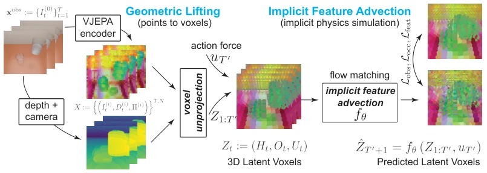

This paper attempts to address the physical consistency issue in video generation via an "implicit" approach, lifting 2D features into 3D voxel space to manipulate. The highlight lies in unifying the simulation of fluids and rigid bodies without traditional physics engines, relying on V-JEPA features and voxel advection, which sounds very appealing. However, to be critical, it essentially relies on monocular depth estimation (MoGe); if the depth is incorrect, the voxels are distorted, and no matter how deeply the physical laws are learned, it is a castle built on sand. Moreover, the error accumulation problem in autoregressive rollout is not thoroughly resolved, only mitigated using a decay factor. For Embodied AI, whether this "pseudo-3D" implicit representation can truly transfer to real robot control remains questionable, as noise from depth estimation directly propagates into the physical state. Furthermore, although claiming "self-supervised", actual training heavily relies on depth priors; if complex scenes cause depth estimation to fail, model performance will plummet. Overall, this is an attempt to walk a tightrope between 2D video and 3D physics; while interesting, it is still far from a true general physical world model.
Current generative video models (e.g., Sora, Veo), while visually realistic, lack a 3D geometric foundation, leading to inconsistencies in object permanence and physical interaction [10, 16, 17]. Existing explicit physics hybrid methods (e.g., PhysGaussian [50], PhysGen [30]) rely on classical simulators (e.g., MPM, PBD), but require precise physical parameters (e.g., Young's modulus), which are difficult to obtain in real videos and are hard to handle for heterogeneous materials. This paper aims to fill this gap by implicitly learning 3D physical laws from monocular video, avoiding manual specification of material types or reliance on the internal state of external physics engines, to achieve a general dynamic world model.
The overall process is divided into two stages: geometric lifting and implicit feature advection. First, V-JEPA is used to extract video semantic features, combined with monocular depth estimation (MoGe) to back-project 2D features into a 3D voxel grid, constructing a sparse voxel representation containing semantic features, occupancy probabilities, and observation states. This step addresses the problem that 2D features cannot maintain object permanence. Second, an action-conditioned voxel feature advector (Volumetric Feature Advection) is designed, learning implicit physical state transitions based on Flow Matching. This predictor adopts a Diffusion Transformer variant, containing local spatial attention (simulating force propagation) and temporal attention (tracking trajectories), reducing computational complexity through sparse tokenization. The training objective decouples structural dynamics from geometric occupancy, including feature velocity loss, Focal Loss for voxel occupancy/occlusion, and a NeRF-style projection loss projecting 3D voxels back to 2D, ensuring consistency between the implicit representation and the observed video. Additionally, the model introduces an autoregressive rollout mechanism to enhance long-term stability, balancing immediate accuracy and long-term drift through a decay factor.

Figure 2: Neural Voxel Dynamics. By lifting 2D semantic features into a 3D latent voxel grid, our generative feature advector fθ learns to implicitly simulate action-conditioned physics directly in the latent space via flow matching; the model (comprising multiple stages of local attention and temporal attention layers, see section A.3) is supervised with solely video-derived signals.
Tested on benchmarks such as CLEVRER, PhysInOne, and PhysGaia, comparing against SOTA methods like CogVideoX and PhysGaussian. Metrics include L2 loss in 2D/3D latent spaces and flow estimation error. Results show that the proposed method outperforms 2D baselines in physical rationality and semantic consistency, performing more robustly especially under multi-view evaluation. Ablation studies indicate that projection loss and the depth estimator (MoGe) significantly impact performance; increasing voxel resolution improves quality but increases VRAM usage. Notably, even using estimated depth, the model still outperforms pure 2D models on complex dynamics such as fluids and smoke, demonstrating the effectiveness of 3D implicit representations. Additionally, experiments found that increasing the number of input views can reduce occlusion ambiguity, but error slightly increases during multi-view inference, attributed to noise accumulation. Overall, the method achieves good physical simulation capabilities without requiring physics engine labels.